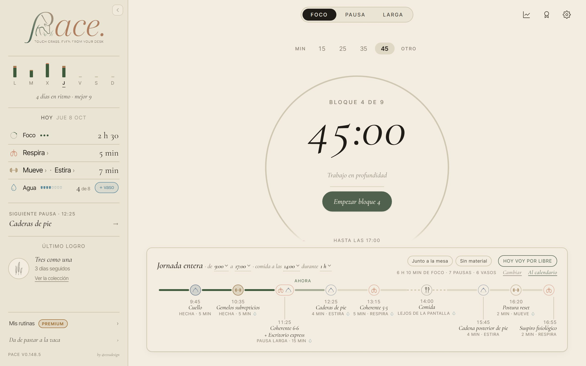

<title>La barra lateral de PACE</title>
<meta name="description" content="Cómo se ve hoy la barra lateral en escritorio, qué le sobra y qué le falta, y tres opciones pintadas encima de la app real.">
<link rel="preconnect" href="https://fonts.googleapis.com">
<link rel="preconnect" href="https://fonts.gstatic.com" crossorigin>
<link rel="stylesheet" href="https://fonts.googleapis.com/css2?family=Cormorant+Garamond:ital,wght@0,400;0,500;1,400;1,500&family=Inter+Tight:wght@400;500;600&display=swap">
<style>
/* Una sola columna de lectura, ancha solo donde se comparan fotos. Los colores y
   las letras son los de PACE: el papel crema, la tinta, el oliva del foco y la
   serif itálica de los títulos. */
:root {
  --papel: #F2EDE0;
  --papel-2: #EAE4D4;
  --papel-3: #DFD8C4;
  --tinta: #1F1C17;
  --tinta-2: #4A453C;
  --tinta-3: #7E7766;
  --linea: #C9C0A8;
  --oliva: #3E5A3A;
  --terracota: #A85E43;
  --bronce: #9C6B2E;
  --oliva-suave: rgba(62, 90, 58, 0.10);
  --serif: 'Cormorant Garamond', 'EB Garamond', Georgia, serif;
  --sans: 'Inter Tight', system-ui, -apple-system, 'Segoe UI', sans-serif;
  color-scheme: light;
}
@media (prefers-color-scheme: dark) {
  :root:not([data-theme="light"]) {
    --papel: #1d1a14; --papel-2: #26211a; --papel-3: #2f2920;
    --tinta: #EDE5D3; --tinta-2: #c0b49e; --tinta-3: #B2A995; --linea: #4d4536;
    --oliva: #98B58B; --terracota: #E8A98F; --bronce: #D2A060; --oliva-suave: rgba(122, 154, 109, 0.14);
    color-scheme: dark;
  }
}
:root[data-theme="dark"] {
  --papel: #1d1a14; --papel-2: #26211a; --papel-3: #2f2920;
  --tinta: #EDE5D3; --tinta-2: #c0b49e; --tinta-3: #B2A995; --linea: #4d4536;
  --oliva: #98B58B; --terracota: #E8A98F; --bronce: #D2A060; --oliva-suave: rgba(122, 154, 109, 0.14);
  color-scheme: dark;
}

* { box-sizing: border-box; }
body {
  background: var(--papel); color: var(--tinta);
  font-family: var(--sans); font-size: 16px; line-height: 1.6;
  padding: 0 20px;
}
.hoja { max-width: 1120px; margin: 0 auto; padding-block: 48px 96px; display: flex; flex-direction: column; gap: 64px; }
.texto { max-width: 680px; }
h1, h2, h3 { font-family: var(--serif); font-style: italic; font-weight: 500; line-height: 1.1; margin: 0; text-wrap: balance; }
h1 { font-size: clamp(44px, 7vw, 68px); }
h2 { font-size: clamp(30px, 4.4vw, 40px); }
h3 { font-size: 25px; }
p { margin: 0; }
.rotulo { font-size: 11px; letter-spacing: .14em; text-transform: uppercase; color: var(--tinta-3); font-weight: 500; }
.seccion { display: flex; flex-direction: column; gap: 22px; }
.seccion > header { display: flex; flex-direction: column; gap: 8px; border-top: 1px solid var(--linea); padding-top: 22px; }
.entrada { font-family: var(--serif); font-size: 23px; line-height: 1.4; color: var(--tinta-2); max-width: 640px; }
.nota { font-size: 13.5px; color: var(--tinta-3); }
a { color: var(--oliva); text-underline-offset: 3px; }
code { font-size: .88em; background: var(--papel-2); padding: 1px 5px; border-radius: 4px; }

/* En corto */
.corto { display: grid; grid-template-columns: minmax(0, 1.1fr) minmax(0, 1fr); gap: 28px; background: var(--papel-2);
  border: 1px solid var(--linea); border-radius: 14px; padding: 26px 28px; }
.corto h3 { margin-bottom: 8px; }
.corto ul { margin: 0; padding-left: 18px; display: flex; flex-direction: column; gap: 6px; color: var(--tinta-2); }

/* Controles de las fotos */
.mandos { display: flex; flex-wrap: wrap; gap: 10px 22px; align-items: center; }
.grupo { display: flex; align-items: center; gap: 8px; }
.grupo > span { font-size: 11px; letter-spacing: .12em; text-transform: uppercase; color: var(--tinta-3); }
.pildoras { display: inline-flex; border: 1px solid var(--linea); border-radius: 999px; padding: 3px; gap: 2px; background: var(--papel); }
.pildoras button { font: inherit; font-size: 13px; border: 0; background: none; color: var(--tinta-2); padding: 5px 12px;
  border-radius: 999px; cursor: pointer; }
.pildoras button[aria-pressed="true"] { background: var(--tinta); color: var(--papel); }
.pildoras button:focus-visible, .op-cab button:focus-visible { outline: 2px solid var(--oliva); outline-offset: 2px; }

/* Las cuatro barras, una al lado de otra */
.cuatro { display: grid; grid-template-columns: repeat(4, minmax(0, 1fr)); gap: 18px; align-items: start; }
.barra { display: flex; flex-direction: column; gap: 8px; min-width: 0; }
.barra img { display: block; width: 100%; height: auto; border-radius: 8px; border: 1px solid var(--linea); background: var(--papel-2); }
.barra figcaption { display: flex; justify-content: space-between; align-items: baseline; gap: 8px; }
.barra figcaption b { font-family: var(--serif); font-style: italic; font-weight: 500; font-size: 20px; }
.tam { font-size: 12px; color: var(--tinta-3); font-variant-numeric: tabular-nums; white-space: nowrap; }
.tam.bien { color: var(--oliva); }

/* Pantalla entera */
.pantalla img { display: block; width: 100%; height: auto; border-radius: 10px; border: 1px solid var(--linea); }

/* Lo que he visto */
.cuatro-listas { display: grid; grid-template-columns: repeat(2, minmax(0, 1fr)); gap: 28px 40px; }
.lista h3 { font-size: 23px; margin-bottom: 10px; display: flex; align-items: baseline; gap: 10px; }
.lista h3 i { width: 9px; height: 9px; border-radius: 50%; display: inline-block; flex: none; transform: translateY(-2px); }
.lista ul { margin: 0; padding: 0; list-style: none; display: flex; flex-direction: column; gap: 12px; }
.lista li { padding-left: 14px; border-left: 1px solid var(--linea); color: var(--tinta-2); font-size: 15px; }
.lista li strong { color: var(--tinta); font-weight: 600; }

/* Opciones */
.opciones { display: grid; grid-template-columns: repeat(3, minmax(0, 1fr)); gap: 22px; }
.op { border: 1px solid var(--linea); border-radius: 14px; padding: 22px 22px 24px; display: flex; flex-direction: column; gap: 12px; background: var(--papel); }
.op.recomendada { border-color: var(--oliva); box-shadow: 0 0 0 1px var(--oliva) inset; }
.op-cab { display: flex; justify-content: space-between; align-items: baseline; gap: 10px; }
.op-letra { font-family: var(--serif); font-size: 40px; line-height: 1; font-style: italic; color: var(--tinta-3); }
.sello { font-size: 10px; letter-spacing: .12em; text-transform: uppercase; color: var(--oliva); border: 1px solid var(--oliva);
  border-radius: 999px; padding: 2px 9px; background: var(--oliva-suave); font-weight: 600; white-space: nowrap; }
.op p { color: var(--tinta-2); font-size: 15px; }
.op dl { margin: 0; display: flex; flex-direction: column; gap: 10px; font-size: 14px; }
.op dt { font-size: 11px; letter-spacing: .12em; text-transform: uppercase; color: var(--tinta-3); }
.op dd { margin: 2px 0 0; color: var(--tinta-2); }

/* Tabla de medidas */
.tabla { overflow-x: auto; border: 1px solid var(--linea); border-radius: 12px; }
table { border-collapse: collapse; width: 100%; font-size: 14px; font-variant-numeric: tabular-nums; min-width: 620px; }
th, td { padding: 10px 14px; text-align: right; border-bottom: 1px solid var(--linea); white-space: nowrap; }
th:first-child, td:first-child { text-align: left; }
thead th { font-size: 11px; letter-spacing: .12em; text-transform: uppercase; color: var(--tinta-3); font-weight: 500; background: var(--papel-2); }
tbody tr:last-child td { border-bottom: 0; }
td.hoy { color: var(--terracota); }
td.ok { color: var(--oliva); }

/* Preguntas */
.preguntas { margin: 0; padding: 0; list-style: none; counter-reset: p; display: flex; flex-direction: column; gap: 18px; max-width: 760px; }
.preguntas li { counter-increment: p; display: grid; grid-template-columns: 44px minmax(0, 1fr); gap: 4px 14px; }
.preguntas li::before { content: counter(p); font-family: var(--serif); font-style: italic; font-size: 34px; line-height: 1; color: var(--oliva); grid-row: span 2; }
.preguntas b { font-weight: 600; }
.preguntas span { color: var(--tinta-2); font-size: 15px; }

@media (max-width: 860px) {
  .corto, .cuatro-listas, .opciones { grid-template-columns: minmax(0, 1fr); }
  .cuatro { grid-template-columns: repeat(2, minmax(0, 1fr)); }
}
@media (max-width: 420px) { body { padding: 0 16px; } .corto { padding: 20px; } }
@media (prefers-reduced-motion: no-preference) { .barra img, .pantalla img { transition: opacity .2s; } }
</style>

<main class="hoja">

  <header class="seccion" style="gap:18px">
    <span class="rotulo">PACE · v0.148.5 · 8 de octubre de 2026</span>
    <h1>La barra lateral</h1>
    <p class="entrada">Pediste que fuera más útil, más elegante y más bonita. Aquí está cómo se ve hoy en tres pantallas, qué le sobra y qué le falta, y tres maneras de rehacerla, pintadas encima de la app de verdad.</p>
  </header>

  <section class="corto" aria-label="En corto">
    <div>
      <h3>Recomiendo la B, «Puertas»</h3>
      <p style="color:var(--tinta-2)">Cabe sin encogerse, deja de repetir lo que ya dice la home y hace dos cosas que hoy no se pueden hacer desde allí: abrir Estira y apuntar un vaso con un botón que se ve. Conserva los colores de cada módulo y la semana gana sus minutos.</p>
    </div>
    <div>
      <span class="rotulo">Lo que tienes que elegir</span>
      <ul style="margin-top:8px">
        <li>Qué opción: A, B o C (o B con algo de C).</li>
        <li>Dónde va la siguiente pausa de «A tu ritmo».</li>
        <li>Si la semana lleva barras o se queda con puntos.</li>
        <li>Si «Mis rutinas» y «Da de pastar a la vaca» pasan a texto.</li>
        <li>Qué número de vasos manda. <a href="#preguntas">Las seis preguntas</a></li>
      </ul>
    </div>
  </section>

  <!-- 1 · HOY -->
  <section class="seccion" id="hoy">
    <header>
      <span class="rotulo">Antes</span>
      <h2>Cómo se ve hoy</h2>
    </header>
    <p class="texto">Dos días del jueves 8 de octubre, con la semana tipo de lunes a viernes. El <b>día con actividad</b> son las 12:20, con el día de «A tu ritmo» empezado a las 9:00, tres bloques y dos pausas hechas, cuatro vasos y cuatro días seguidos. El <b>día vacío</b> son las 9:10, con el día ya propuesto y nada hecho todavía.</p>
    <div class="mandos" data-mandos="hoy">
      <div class="grupo"><span>Pantalla</span><div class="pildoras" data-k="pantalla">
        <button data-v="1280x800" aria-pressed="true">1280 × 800</button><button data-v="1536x704" aria-pressed="false">1536 × 704</button><button data-v="1920x960" aria-pressed="false">1920 × 960</button></div></div>
      <div class="grupo"><span>Paleta</span><div class="pildoras" data-k="paleta">
        <button data-v="crema" aria-pressed="true">Crema</button><button data-v="oscuro" aria-pressed="false">Oscura</button></div></div>
      <div class="grupo"><span>Día</span><div class="pildoras" data-k="dia">
        <button data-v="activo" aria-pressed="true">Con actividad</button><button data-v="vacio" aria-pressed="false">Vacío</button></div></div>
    </div>
    <figure class="pantalla" style="margin:0">
      
    </figure>
    <p class="nota" data-pie="hoy"></p>
  </section>

  <!-- 2 · LO QUE HE VISTO -->
  <section class="seccion" id="visto">
    <header>
      <span class="rotulo">Auditoría</span>
      <h2>Lo que he visto</h2>
    </header>
    <div class="cuatro-listas">
      <div class="lista">
        <h3><i style="background:var(--oliva)"></i>Se usa y se queda</h3>
        <ul>
          <li><strong>La semana.</strong> Es el único sitio, fuera de Estadísticas, donde se ve la semana, y la abre con un clic.</li>
          <li><strong>Lo hecho hoy.</strong> La home enseña lo que toca y lo planeado («6 h 10 min de foco»); lo que llevas en minutos y vasos solo está aquí.</li>
          <li><strong>Agua suma un vaso.</strong> Es el gesto más repetido del día y se hace sin abrir nada.</li>
          <li><strong>Respira y Cuerpo abren su biblioteca.</strong> Con el día de «A tu ritmo» en pantalla, la home no trae los cuatro botones de actividades, así que estas dos casillas son la única puerta a las bibliotecas.</li>
          <li><strong>«Continúa», «Repetir» y «Para ahora»</strong> en los días por libre: la home no los dice.</li>
          <li><strong>El último logro</strong>, con su rótulo, la vaca del logo y el pie con la versión.</li>
        </ul>
      </div>
      <div class="lista">
        <h3><i style="background:var(--terracota)"></i>Se repite o sobra</h3>
        <ul>
          <li><strong>La tarjeta de la siguiente pausa repite la home palabra por palabra.</strong> «12:25 · Caderas de pie · 4 min · Estira» está también en la línea del día, que en escritorio se ve siempre, también con el Foco en marcha.</li>
          <li><strong>«Llevas tres bloques y dos pausas»</strong> repite el «Bloque 4 de 9» del aro y las «Hecha» de la línea.</li>
          <li><strong>En el día vacío, «Para ahora · Postura reset»</strong> propone otra rutina justo al lado de la pregunta de «A tu ritmo» y su «Comienza». Son dos voces para la misma decisión.</li>
          <li><strong>Cuatro casillas a cero</strong> y «Aún no hay ninguno» ocupan unos 300 px para decir que todavía no hay nada.</li>
        </ul>
      </div>
      <div class="lista">
        <h3><i style="background:var(--bronce)"></i>Falta</h3>
        <ul>
          <li><strong>Una puerta a Estira.</strong> «Cuerpo» abre solo Mueve, y con el día servido la home no tiene botones de actividades: a Estira solo se llega por una parada de la línea o por el menú de la pausa.</li>
          <li><strong>Que se vea que Agua apunta un vaso.</strong> La casilla parece igual que las otras, que abren su módulo, y nada dice que al pulsarla sume.</li>
          <li><strong>La racha.</strong> La barra la sabe («4 días en ritmo, mejor 9») y dejó de enseñarla cuando se quitó el rótulo de la semana.</li>
          <li><strong>Cuánto hiciste cada día.</strong> Los puntos de la semana solo dicen sí o no.</li>
        </ul>
      </div>
      <div class="lista">
        <h3><i style="background:var(--tinta-3)"></i>Se ve pobre</h3>
        <ul>
          <li><strong>La barra está siempre encogida.</strong> No cabe entera, y para no pedir scroll se ve al 90 % a 1280 × 800, al 78 % a 1536 × 704 y al 86 % a 1920 × 960. A 1536 × 704, la letra pequeña de 11 px se ve a 8,6 y las iniciales de los días a 7.</li>
          <li><strong>Ocho cajas con borde</strong> (cuatro casillas, la tarjeta, el logro y dos píldoras) hacen que parezca un panel de control y no papel y tinta.</li>
          <li><strong>Lo que más llama la atención es «Mis rutinas · Premium»</strong>, que lleva a algo que está cerrado, con otra píldora debajo. El pie se lleva 118 px.</li>
          <li><strong>Cada sección se titula a su manera:</strong> la semana sin rótulo, «Hoy» centrado y la tarjeta con su rótulo a la izquierda y por dentro.</li>
          <li><strong>Algunos sellos son un trazo de lápiz muy fino</strong> y a 26 px casi no se ven: «Ciclo completo» es un círculo vacío.</li>
          <li><strong>Dos números para el agua:</strong> la barra dice «4 de 8» (tu meta) y la home «6 vasos» (los que el día reparte en tus horas).</li>
        </ul>
      </div>
    </div>
  </section>

  <!-- 3 · OPCIONES -->
  <section class="seccion" id="opciones">
    <header>
      <span class="rotulo">Después</span>
      <h2>Tres opciones</h2>
    </header>
    <p class="texto">Las tres están pintadas dentro de la app real, sobre el mismo estado que las fotos de antes, con los colores y las letras de PACE. Ningún número es inventado: todo sale de lo que la barra ya sabe. El logo, la vaca, el botón de plegar y el orden general no cambian en ninguna.</p>

    <div class="opciones">
      <article class="op">
        <div class="op-cab"><h3>Afinada</h3><span class="op-letra">A</span></div>
        <p>Las mismas piezas, en el mismo orden y con las mismas funciones. Cambia la forma.</p>
        <dl>
          <div><dt>Qué cambia</dt><dd>Hoy pasa de cuatro cajas a una fila de cuatro columnas. La tarjeta pierde «Llevas…». El logro va sin caja, con su descripción. El pie no se toca.</dd></div>
          <div><dt>Siguiente pausa</dt><dd>En su tarjeta, como hoy.</dd></div>
          <div><dt>Lo que no arregla</dt><dd>Estira sigue sin puerta, el vaso sigue escondido y la tarjeta sigue repitiendo la home.</dd></div>
        </dl>
      </article>
      <article class="op recomendada">
        <div class="op-cab"><h3>Puertas</h3><span class="sello">Recomendada</span><span class="op-letra">B</span></div>
        <p>La barra hace lo que la home no hace: abrir las bibliotecas y apuntar el agua.</p>
        <dl>
          <div><dt>Qué cambia</dt><dd>Hoy es una lista: cada nombre es una puerta (Respira, Mueve, Estira) y el agua lleva «+ vaso». La semana pinta sus minutos y recupera la racha. El pie pasa a texto.</dd></div>
          <div><dt>Siguiente pausa</dt><dd>En una sola línea, sin caja ni «Llevas…». En el día vacío no se propone nada al lado de «Comienza».</dd></div>
          <div><dt>Lo que cuesta</dt><dd>Una puerta nueva para Estira y dos frases que vuelven («4 días en ritmo · mejor 9»). Las filas miden 38 px de alto.</dd></div>
        </dl>
      </article>
      <article class="op">
        <div class="op-cab"><h3>Cuaderno</h3><span class="op-letra">C</span></div>
        <p>La home dice lo que toca y la barra apunta lo que llevas, con palabras.</p>
        <dl>
          <div><dt>Qué cambia</dt><dd>Hoy se escribe: «Dos horas y media de foco», «Cinco minutos respirando». Debajo, tres puertas grandes. Un día vacío es una frase, no cuatro ceros.</dd></div>
          <div><dt>Siguiente pausa</dt><dd>No sale mientras la home enseña «A tu ritmo». Vuelve para «Continúa», «Repetir» y «Para ahora» en los días por libre.</dd></div>
          <div><dt>Lo que cuesta</dt><dd>Se lee más despacio que una cifra y todas las frases hay que escribirlas también en inglés.</dd></div>
        </dl>
      </article>
    </div>

    <div class="mandos" data-mandos="cuatro">
      <div class="grupo"><span>Pantalla</span><div class="pildoras" data-k="pantalla">
        <button data-v="1280x800" aria-pressed="true">1280 × 800</button><button data-v="1536x704" aria-pressed="false">1536 × 704</button><button data-v="1920x960" aria-pressed="false">1920 × 960</button></div></div>
      <div class="grupo"><span>Paleta</span><div class="pildoras" data-k="paleta">
        <button data-v="crema" aria-pressed="true">Crema</button><button data-v="oscuro" aria-pressed="false">Oscura</button></div></div>
      <div class="grupo"><span>Día</span><div class="pildoras" data-k="dia">
        <button data-v="activo" aria-pressed="true">Con actividad</button><button data-v="vacio" aria-pressed="false">Vacío</button></div></div>
    </div>
    <div class="cuatro">
      <figure class="barra" style="margin:0"><figcaption><b>Hoy</b><span class="tam" data-tam="hoy"></span></figcaption></figure>
      <figure class="barra" style="margin:0"><figcaption><b>A · Afinada</b><span class="tam" data-tam="A"></span></figcaption></figure>
      <figure class="barra" style="margin:0"><figcaption><b>B · Puertas</b><span class="tam" data-tam="B"></span></figcaption></figure>
      <figure class="barra" style="margin:0"><figcaption><b>C · Cuaderno</b><span class="tam" data-tam="C"></span></figcaption></figure>
    </div>
    <p class="nota">El porcentaje es el tamaño al que se ve la barra en esa pantalla: por debajo de 100 % se encoge entera para no pedir scroll.</p>
  </section>

  <!-- 4 · CON LA HOME -->
  <section class="seccion" id="con-la-home">
    <header>
      <span class="rotulo">Junto a la home</span>
      <h2>La pantalla entera</h2>
    </header>
    <p class="texto">Para ver si la barra repite algo de la home, hay que mirarlas juntas. La línea del día ya dice la siguiente pausa, su hora y su módulo.</p>
    <div class="mandos" data-mandos="entera">
      <div class="grupo"><span>Barra</span><div class="pildoras" data-k="vista">
        <button data-v="hoy" aria-pressed="false">Hoy</button><button data-v="A" aria-pressed="false">A</button><button data-v="B" aria-pressed="true">B</button><button data-v="C" aria-pressed="false">C</button></div></div>
      <div class="grupo"><span>Pantalla</span><div class="pildoras" data-k="pantalla">
        <button data-v="1280x800" aria-pressed="true">1280 × 800</button><button data-v="1536x704" aria-pressed="false">1536 × 704</button></div></div>
      <div class="grupo"><span>Paleta</span><div class="pildoras" data-k="paleta">
        <button data-v="crema" aria-pressed="true">Crema</button><button data-v="oscuro" aria-pressed="false">Oscura</button></div></div>
      <div class="grupo"><span>Día</span><div class="pildoras" data-k="dia">
        <button data-v="activo" aria-pressed="true">Con actividad</button><button data-v="vacio" aria-pressed="false">Vacío</button></div></div>
    </div>
    <figure class="pantalla" style="margin:0">
      
    </figure>
  </section>

  <!-- 5 · MEDIDAS -->
  <section class="seccion" id="medidas">
    <header>
      <span class="rotulo">Medido en la app</span>
      <h2>Las tres caben sin encogerse</h2>
    </header>
    <p class="texto">Tamaño al que se ve la barra y aire que queda encima del pie, en píxeles. En ninguna de las doce combinaciones, ni hoy ni con las opciones, la página o la barra piden scroll. La paleta oscura mide lo mismo que la crema.</p>
    <div class="tabla">
      <table>
        <thead><tr><th>Pantalla · día</th><th>Hoy</th><th>A</th><th>B</th><th>C</th></tr></thead>
        <tbody data-tabla></tbody>
      </table>
    </div>
  </section>

  <!-- 6 · RECOMENDACIÓN -->
  <section class="seccion" id="recomendacion">
    <header>
      <span class="rotulo">Recomendación</span>
      <h2>La B, con la semana en barras</h2>
    </header>
    <div class="texto" style="display:flex;flex-direction:column;gap:14px;color:var(--tinta-2)">
      <p>La B es la única que responde a las tres cosas que pediste a la vez. Es <b>más útil</b> porque abre Respira, Mueve y Estira desde donde estás y apunta el vaso con un botón que se ve, que son las dos cosas que la home no hace en un día de trabajo. Es <b>más elegante</b> porque quita las ocho cajas y deja papel, filas y una sola línea para la siguiente pausa. Y es <b>más bonita</b> porque ya no se encoge: a 1536 × 704 se ve al 94 % en vez de al 78 %, y la semana gana color con los minutos de cada módulo.</p>
      <p>La A es la apuesta segura si quieres que todo siga igual por dentro, pero deja los tres huecos de uso tal cual. La C es la más tranquila y la que más se parece a un cuaderno, pero se lee más despacio y obliga a escribir frases nuevas en dos idiomas. Si te gusta su voz, se puede poner su frase del día vacío en la B.</p>
      <p>Para «A tu ritmo», la B conserva la siguiente pausa a la vista, pero en una línea: la hora y el nombre, sin repetir el módulo, los minutos ni lo que llevas.</p>
    </div>
  </section>

  <!-- 7 · PREGUNTAS -->
  <section class="seccion" id="preguntas">
    <header>
      <span class="rotulo">Para Ez</span>
      <h2>Lo que tienes que elegir</h2>
    </header>
    <ol class="preguntas">
      <li><b>¿Qué opción subimos: A, B o C?</b><span>Se puede mezclar: por ejemplo, la B con la frase del día vacío de la C.</span></li>
      <li><b>¿Dónde va la siguiente pausa de «A tu ritmo»?</b><span>En su tarjeta como hoy (A), en una línea (B) o fuera mientras la home la enseña (C). En el móvil propongo dejar la tarjeta como está, porque allí la línea del día es una tira de puntos.</span></li>
      <li><b>¿La semana con barras de minutos o con puntos?</b><span>Las barras dicen cuánto hiciste cada día con el color de cada módulo. Los puntos solo dicen si hiciste algo.</span></li>
      <li><b>¿«Mis rutinas» y «Da de pastar a la vaca» pasan a texto?</b><span>En septiembre pediste la píldora naranja para «Mis rutinas». Hoy es lo que más llama la atención de la barra y lleva a algo cerrado. La A las deja como están; la B y la C las pasan a dos filas de texto.</span></li>
      <li><b>¿Qué número de vasos manda?</b><span>La barra dice «4 de 8» (tu meta del día) y la home «6 vasos» (los que el día reparte entre tus horas). Propongo que la barra siga con tu meta y que la home cambie a «6 vasos en tus horas», pero es tu decisión.</span></li>
      <li><b>¿Volvemos a enseñar la racha?</b><span>«4 días en ritmo · mejor 9» bajo la semana, con la frase que ya existe en la app. Se quitó cuando la semana perdió su rótulo.</span></li>
    </ol>
  </section>

  <!-- 8 · CÓMO SE HIZO -->
  <section class="seccion" id="como">
    <header>
      <span class="rotulo">Para quien siga</span>
      <h2>Cómo se hizo y qué falta</h2>
    </header>
    <div class="texto" style="display:flex;flex-direction:column;gap:12px;color:var(--tinta-2);font-size:15px">
      <p>Las fotos las hace <code>fotos.js</code>, junto a esta página, sobre el <code>index.html</code> de v0.148.5: <code>node docs/traspaso/archivos/sidebar-8oct/fotos.js</code>. Levanta su propio servidor en el puerto 8781 y se para si ese puerto lo sirve otra carpeta. Siembra el estado como <code>tests/helpers.js</code> (con <code>lastActiveDay</code> y las guardas de migración) y crea las sesiones de hoy con la fábrica de eventos de la app. Las opciones viven en <code>opciones.js</code>: esconden lo que pinta React, conservan el logo y añaden su propio HTML, que lee los mismos selectores que la barra. Las medidas quedan en <code>medidas.json</code>.</p>
      <p><b>No cubre:</b> el cajón del móvil (la opción elegida se mide después a 360 × 640 y con el suelo de 0,80), el inglés, «Continúa» y «Repetir» en un día por libre, ni el foco del teclado de las filas nuevas.</p>
      <p><b>Al implementar:</b> la puerta de Estira necesita un destino nuevo en <code>app/main/main.eventos.jsx</code> (hoy <code>body</code> abre solo Mueve). Las barras de la semana leen <code>weeklyStats</code> con el índice lunes-primero y el mismo criterio de día activo que <code>selectSidebarWeek</code>; el agua no tiene barra. Hay que conservar los ganchos que usan las pruebas (<code>data-pace-hoy-celda</code>, <code>data-pace-semana</code>, <code>data-pace-sidebar-ultimo-titulo</code>, <code>data-pace-sidebar-accion</code>) y revisar <code>tests/sidebar-redesign.spec.js</code> y <code>tests/sidebar-altura.spec.js</code>. El motor de la escala se queda como red para pantallas más bajas.</p>
    </div>
  </section>

</main>

<script>
/* Lo medido en la app (medidas.json): tamaño al que se ve la barra y aire sobre el pie. */
const MEDIDAS = /*MEDIDAS*/{"antes":{"1280x800-crema-vacio":{"escala":0.926,"huecoAlPie":0},"1280x800-crema-activo":{"escala":0.896,"huecoAlPie":0},"1280x800-oscuro-vacio":{"escala":0.926,"huecoAlPie":0},"1280x800-oscuro-activo":{"escala":0.896,"huecoAlPie":0},"1536x704-crema-vacio":{"escala":0.81,"huecoAlPie":0},"1536x704-crema-activo":{"escala":0.783,"huecoAlPie":0},"1536x704-oscuro-vacio":{"escala":0.81,"huecoAlPie":0},"1536x704-oscuro-activo":{"escala":0.783,"huecoAlPie":0},"1920x960-crema-vacio":{"escala":0.892,"huecoAlPie":0},"1920x960-crema-activo":{"escala":0.861,"huecoAlPie":1},"1920x960-oscuro-vacio":{"escala":0.892,"huecoAlPie":0},"1920x960-oscuro-activo":{"escala":0.861,"huecoAlPie":1}},"despues":{"A-1280x800-crema-vacio":{"escala":1,"huecoAlPie":97},"B-1280x800-crema-vacio":{"escala":1,"huecoAlPie":120},"C-1280x800-crema-vacio":{"escala":1,"huecoAlPie":123},"A-1280x800-crema-activo":{"escala":1,"huecoAlPie":84},"B-1280x800-crema-activo":{"escala":1,"huecoAlPie":53},"C-1280x800-crema-activo":{"escala":1,"huecoAlPie":51},"A-1280x800-oscuro-vacio":{"escala":1,"huecoAlPie":97},"B-1280x800-oscuro-vacio":{"escala":1,"huecoAlPie":120},"C-1280x800-oscuro-vacio":{"escala":1,"huecoAlPie":123},"A-1280x800-oscuro-activo":{"escala":1,"huecoAlPie":84},"B-1280x800-oscuro-activo":{"escala":1,"huecoAlPie":53},"C-1280x800-oscuro-activo":{"escala":1,"huecoAlPie":51},"A-1536x704-crema-vacio":{"escala":1,"huecoAlPie":1},"B-1536x704-crema-vacio":{"escala":1,"huecoAlPie":24},"C-1536x704-crema-vacio":{"escala":1,"huecoAlPie":27},"A-1536x704-crema-activo":{"escala":0.981,"huecoAlPie":1},"B-1536x704-crema-activo":{"escala":0.94,"huecoAlPie":0},"C-1536x704-crema-activo":{"escala":0.937,"huecoAlPie":0},"A-1536x704-oscuro-vacio":{"escala":1,"huecoAlPie":1},"B-1536x704-oscuro-vacio":{"escala":1,"huecoAlPie":24},"C-1536x704-oscuro-vacio":{"escala":1,"huecoAlPie":27},"A-1536x704-oscuro-activo":{"escala":0.981,"huecoAlPie":1},"B-1536x704-oscuro-activo":{"escala":0.94,"huecoAlPie":0},"C-1536x704-oscuro-activo":{"escala":0.937,"huecoAlPie":0},"A-1920x960-crema-vacio":{"escala":1,"huecoAlPie":83},"B-1920x960-crema-vacio":{"escala":1,"huecoAlPie":111},"C-1920x960-crema-vacio":{"escala":1,"huecoAlPie":115},"A-1920x960-crema-activo":{"escala":1,"huecoAlPie":67},"B-1920x960-crema-activo":{"escala":1,"huecoAlPie":28},"C-1920x960-crema-activo":{"escala":1,"huecoAlPie":26},"A-1920x960-oscuro-vacio":{"escala":1,"huecoAlPie":83},"B-1920x960-oscuro-vacio":{"escala":1,"huecoAlPie":111},"C-1920x960-oscuro-vacio":{"escala":1,"huecoAlPie":115},"A-1920x960-oscuro-activo":{"escala":1,"huecoAlPie":67},"B-1920x960-oscuro-activo":{"escala":1,"huecoAlPie":28},"C-1920x960-oscuro-activo":{"escala":1,"huecoAlPie":26}}};

const estado = {
  hoy: { pantalla: '1280x800', paleta: 'crema', dia: 'activo' },
  cuatro: { pantalla: '1280x800', paleta: 'crema', dia: 'activo' },
  entera: { vista: 'B', pantalla: '1280x800', paleta: 'crema', dia: 'activo' },
};
const NOMBRE = { '1280x800': '1280 × 800', '1536x704': '1536 × 704', '1920x960': '1920 × 960' };
const pct = (x) => Math.round(x * 100) + ' %';

function clave(e) { return e.pantalla + '-' + e.paleta + '-' + e.dia; }

function pintar() {
  const h = estado.hoy, k = clave(h);
  document.querySelector('[data-foto="hoy"]').src = 'fotos/antes-' + k + '.jpg';
  const m = MEDIDAS.antes && MEDIDAS.antes[k];
  document.querySelector('[data-pie="hoy"]').textContent = m
    ? 'A ' + NOMBRE[h.pantalla] + ' la barra se ve al ' + pct(m.escala) + ' de su tamaño para caber sin scroll.' : '';

  const c = estado.cuatro, kc = clave(c);
  document.querySelector('[data-barra="hoy"]').src = 'fotos/antes-barra-' + kc + '.png';
  ['A', 'B', 'C'].forEach((o) => { document.querySelector('[data-barra="' + o + '"]').src = 'fotos/despues-barra-' + o + '-' + kc + '.png'; });
  const tam = (el, x) => { el.textContent = x == null ? '' : 'se ve al ' + pct(x); el.classList.toggle('bien', x >= 0.93); };
  tam(document.querySelector('[data-tam="hoy"]'), MEDIDAS.antes && MEDIDAS.antes[kc] && MEDIDAS.antes[kc].escala);
  ['A', 'B', 'C'].forEach((o) => {
    const v = MEDIDAS.despues && MEDIDAS.despues[o + '-' + kc];
    tam(document.querySelector('[data-tam="' + o + '"]'), v && v.escala);
  });

  const e = estado.entera, ke = clave(e);
  document.querySelector('[data-foto="entera"]').src = e.vista === 'hoy' ? 'fotos/antes-' + ke + '.jpg' : 'fotos/despues-' + e.vista + '-' + ke + '.jpg';
}

document.querySelectorAll('[data-mandos]').forEach((mandos) => {
  const e = estado[mandos.getAttribute('data-mandos')];
  mandos.querySelectorAll('.pildoras').forEach((grupo) => {
    const k = grupo.getAttribute('data-k');
    grupo.querySelectorAll('button').forEach((b) => {
      b.addEventListener('click', () => {
        e[k] = b.getAttribute('data-v');
        grupo.querySelectorAll('button').forEach((x) => x.setAttribute('aria-pressed', String(x === b)));
        pintar();
      });
    });
  });
});

(function tabla() {
  const cuerpo = document.querySelector('[data-tabla]');
  if (!MEDIDAS.antes) return;
  const filas = [];
  ['1280x800', '1536x704', '1920x960'].forEach((p) => {
    ['activo', 'vacio'].forEach((d) => {
      const k = p + '-crema-' + d;
      const celda = (v, hoy) => v ? '<td class="' + (hoy ? 'hoy' : (v.escala >= 0.93 ? 'ok' : '')) + '">' + pct(v.escala) +
        (hoy ? '' : ' · ' + Math.max(0, v.huecoAlPie || 0) + ' px') + '</td>' : '<td>—</td>';
      filas.push('<tr><td>' + NOMBRE[p] + ' · ' + (d === 'activo' ? 'con actividad' : 'vacío') + '</td>' + celda(MEDIDAS.antes[k], true) +
        ['A', 'B', 'C'].map((o) => celda(MEDIDAS.despues[o + '-' + k], false)).join('') + '</tr>');
    });
  });
  cuerpo.innerHTML = filas.join('');
})();

pintar();
</script>
